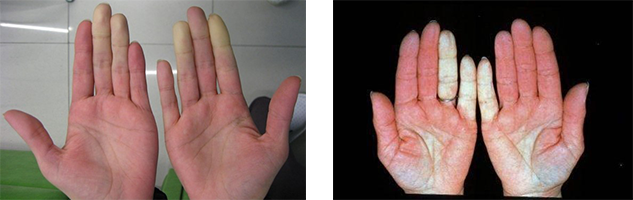
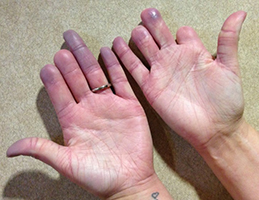

Module: Management of Raynaud’s Phenomenon, Finger Ulcers, Calcinosis, and Skin Involvement
Deborah McCloskey, RN, BSN; Janet L. Poole, PhD, OTR/L Cindy Mendelson, PhD, RN, and; Dinesh Khanna, MD, MS
Raynaud’s phenomenon
Raynaud’s phenomenon (RP) is the most common and usually the earliest symptom in people with scleroderma. Raynaud’s phenomenon is a type of cold sensitivity that is characterized by color changes of the fingertips. The blood vessels in the fingers become narrower because of cold or stress. It is important to understand that when there is an episode in the hands or feet, there may also be narrowing of the blood vessels in the lungs, heart, and kidneys. The typical attack begins with the fingertips becoming very pale, then blue or purple. Sometimes the fingers turn red when they warm up. The color changes and the intensity of attacks can vary from person to person and from attack to attack. Therefore, it is important to recognize the symptoms of Raynaud’s and understand strategies to decrease discomfort.
Management strategies, including medications, will not completely prevent Raynaud’s attacks, but they can lessen symptoms and result in less frequent, less severe attacks with a quicker recovery. In addition, strategies to protect your fingers also protect your internal organs.
